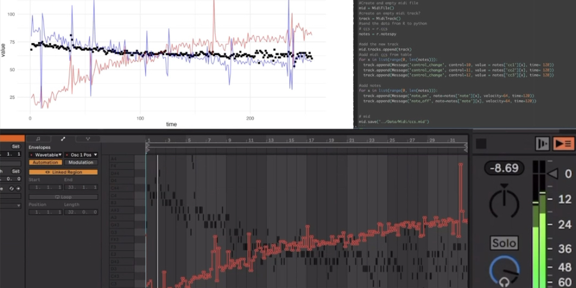

About me

Hi I’m Pablo. I have always been fascinated by the application of mathematics to solve problems, I study Diseases in populations and in my free time I enjoy applying concepts of music, math and programming to create music.
Research Interest
I find exciting the applications of spatio-temporal statistics and
network theory to study the dynamic of diseases in populations and the
impact of anthropogenic activities in human, animal and environmental
health.
I am also interested in the accessibility of tools that can be used to
support decision making. Most of my work is available trough my github
profile and I enjoy working with others to develop open access tools
(i.e. r packages, dashboards for data collection, visualization and
analysis, among others).
Places of previous and ongoing collaborations
Current projects.
I’m currently working as a post-doctoral researcher at the Center for Animal Disease Modeling and Surveillance at UC Davis
QuantRRA: A framewrok for quantitative rapid risk assessment.
QuantRRA is a package for rapid risk assessment developed for the statistical software R with the objective of providing a open source framework for a more transparent and reproducible risk assessment. This R package also includes an interactive interface for people that is not familiarized to coding environments. This project proposes a free alternative to software such as @Risk.

The impact of PRRS in the swine industry
Porcine reproductive and respiratory syndrome is a disease that affects the swine industry and has been a challenge to control in north america. In this project we developed a intra farm agent based model to estimate the effect of interventions to reduce the impact of the disease.

Foot and mouth disease modeling in Ecuador.
Foot and mouth disease(FMD) is a viral disease that affects cloven hoofed animals such as cows, pigs, sheep, among other domestic and wildlife ruminants. The importance of the disease is in the economic impact for affected countries. There has been great advances towards the eradication of the disease in South America in the last couple of years. Ecuador is in the last phase of eradication and the veterinary services is working hard on the eradication program. In this project in collaboration with AGROCALIDAD and PANAFTOSA, we apply tools from network theory and geostatistics to to develop tools that inform decision making.

Other Side Quests.
Consulting
Since 2018, I also collaborate as consultant for the Veterinary Center for Clinical Trials of the Veterinary Teaching Hospital of UC Davis. As part of my work there I assist on study design, sample size estimation and data analysis. You can book me trough my department website
Development of web applications.
I am interested in the development of applications to make more accessible research and analysis of information. In the past I’ve developed applications for data collection, risk assessment, and visualization of complex data sets.

Data perception
I like exploring new perspectives in data visualization. Here are some examples of the experimental tools I like to use:
3D data visualization
Augmented reality
Data Sonification

Previous projects
Spatio temporal trends of COVID-19 in Mexico city
Mexico city is one of the largests cities in the world with a very complex population dynamic. In this project we used spatio-temporal methods to quantify the impact of COVID-19 at city level in Mexico City and explored the effect of different socio-economic characteristics in a increased risk of the incidence of the disease. THis project is currently under peer review.

Testing and Vaccination to reduce the impact of COVID 19 in nursery homes.
Residents of long-term care facilities have experienced a disproportionate burden of the COVID-19 pandemic. In this project we use Agent based modeling to explore the interventions such as testing and vaccination in reducing the impact of COVID-19 outbreaks in nursery homes. Pre print for this project can be found in this Link

Classical Swine Fever in Peru.
Classical Swine Fever is a viral disease that affects the swine industry. In Peru, the disease is endemic and there is a current vaccination program. We applied methodologies from network theory and regression analysis to investigate the asociation of the incidence of the disaese with socio economic factors and the networ structure, and evaluate the vaccination program.